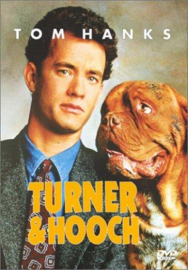
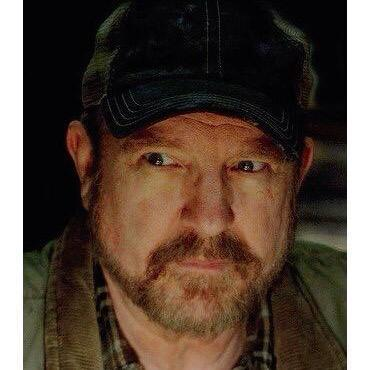

#4320 Scott & Huutsch
Alternativ: Turner & Hooch
 
 IMDB-Wertung: 6.0 / 10
IMDB-Wertung: 6.0 / 10  Metascore: 0
Metascore: 0 
Detektiv Scott leidet unter einem krankhaften Sauberkeitswahn. Doch seine heile Welt geht vor die Hunde, als Huutsch aufkreuzt. Der sabbernde Köder bewacht einen Schrottplatz und ist nicht gerade “des Menschen bester Freund”. Und ausgerechnet dieses bissige Ungeheuer ist einziger Zeuge eines Mordes, auf den Scott angesetzt ist. Es ist Abneigung auf den ersten Blick – doch die beiden müssen zusammenarbeiten. Huutsch gibt sich alle Mühe, Scott auf den Hund zu bringen: Er verwüstet sein Haus, ruiniert seine Karriere und stellt sein Liebesleben auf den Kopf. Die ungleichen Partner bekämpfen sich von morgens bis abends – doch schließlich raufen sie sich zusammen
Jahr: 1989
Dauer: 99 Minuten
FSK: 12
Land: USA Studio: Buena Vista PicturesTonspuren: DD5.1 - ,
Untertitel: Deutsch,
Auflösung: 1080p (1920x1040) Größe: 6942 MB
Genre: Komödie, Krimi, Drama, Thriller
Regisseur:  Roger Spottiswoode
Roger Spottiswoode
Drehbuch: William Kelley
Soundtrack:
Darsteller:
 Tom Hanks als Scott Turner
Tom Hanks als Scott Turner Mare Winningham als Emily Carson
Mare Winningham als Emily Carson Craig T. Nelson als Chief Hyde
Craig T. Nelson als Chief Hyde Reginald VelJohnson als David Sutton
Reginald VelJohnson als David Sutton Scott Paulin als Zack Gregory
Scott Paulin als Zack Gregory John McIntire als Amos Reed
John McIntire als Amos Reed Ebbe Roe Smith als Harley McCabe
Ebbe Roe Smith als Harley McCabe- Joel Bailey als Ferraday
- Mary McCusker als Katie
 Ernie Lively als Motel Clerk
Ernie Lively als Motel Clerk Clyde Kusatsu als Kevin Williams
Clyde Kusatsu als Kevin Williams Elden Henson als Eric Boyett
Elden Henson als Eric Boyett- Cheryl Anderson als Mrs. Boyett
- Jules Sylvester als Animal Control Man
 Nick Dimitri als Casey
Nick Dimitri als Casey-  Jim Beaver als Plant Manager
 Conrad Hurtt als Dock Worker , uncredited
Conrad Hurtt als Dock Worker , uncredited- Will Roberts als Groom , uncredited
- Sharon Van Scott als Pedestrian , uncredited
 J.C. Quinn als Walter Boyett
J.C. Quinn als Walter Boyett- David Knell als Ernie
- Kevin Scannell als Jeff Foster
- Elaine Renee Bush als Store Clerk
- Eda Reiss Merin als Mrs. Remington
- Victor DiMattia als Sean Boyett
- Ursula Lentine als Bride
- Sharon Madden als Mrs. Kathy Harper
- Daniel Ben Wilson als Mike Harper
- Jenny Drugan als Christine Harper
- Madeleine Klein als Animal Control Woman
- Scott N. Stevens als Cop
- Terry Israel als Police Officer
- Andrew Walker als Police Officer
- Fred Ponzlov als Police Officer
- Linda Eve Miller als Mrs. Pine
- Beasley the Dog als Hooch
- Lorenzo Gaspar als Coroner , uncredited
- Chris Lugo als Boy On The Beach , uncredited
- Amy Plaskett als Extra , uncredited
- Greg Stechman als Boy On Street , uncredited
Datei: X:\1989\Scott & Huutsch (1989, FSK12, 1920x1040).mkv seit 06.09.2016
Festplatte: HD 1987-1991
 Es gibt insgesamt 54 Filme in der Gruppe '1989'
Es gibt insgesamt 54 Filme in der Gruppe '1989'